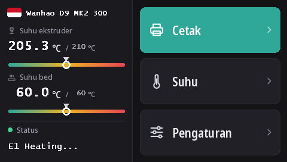

Flash layar sentuh Duplicator 9
Semua D9, dari MK1 sampai MK3, memakai layar sentuh DWIN T5 yang sama (480 × 272). Dengan firmware ini, layar menjalankan DGUS Reloaded 2.0, antarmuka baru kami dalam 16 bahasa, yang di-flash dari kartu microSD.
Unduh DWIN_SET.zip (DGUS Reloaded 2.0)
Apa yang dibawa DGUS Reloaded 2.0
- 16 bahasa: English, Français, Deutsch, Español, Italiano, Português, Nederlands, Polski, Türkçe, Русский, العربية, हिन्दी, 中文, 日本語, 한국어, Bahasa Indonesia. Ketuk bendera di samping nama printer pada layar beranda untuk mengganti bahasa; printer akan mengingat pilihan Anda.
- Halaman sensor filamen: Pengaturan → Filamen → Sensor filamen. Lihat Sensor filamen.
- Baris status yang tetap tampil: pesan terakhir, misalnya Ready, tetap ada di layar alih-alih hilang setelah 30 detik.
- Indikator suhu untuk nozzle dan bed, dengan tanda suhu target.
- Tampilan baru untuk semua halaman: tema gelap, tombol lebih besar, piktogram pada jendela pop-up.

1. Format kartu microSD
- Windows: Windows 11 sering tidak mau memformat FAT32; gunakan GUIFormat dan atur allocation unit size ke 4096.
- Linux:
sudo mkfs.fat -F 32 -s 8 /dev/sdX1(periksa dulu perangkatnya denganlsblk). - macOS:
sudo newfs_msdos -F 32 -c 8 /dev/diskN(periksa dengandiskutil list).
2. Salin file
Ekstrak DWIN_SET.zip dan salin seluruh folder DWIN_SET ke root kartu.
3. Flash
- Matikan printer dan cabut kabel listriknya.
- Buka bagian depan base untuk menjangkau bagian belakang layar, tempat slot microSD-nya berada.
- Masukkan kartu lalu nyalakan printer. Layar menampilkan proses update dalam 10 sampai 30 detik; tunggu sampai layar restart normal, total 1 sampai 3 menit.
- Matikan printer, cabut kartu, tutup kembali base.
Video update layar D9 dari Wanhao menunjukkan letak slotnya.
Asal-usulnya
DGUS Reloaded 2.0 menggambar ulang DGUS Reloaded 1.0.3 (karya Desuuuu, lalu Neo2003) halaman demi halaman. Kode sumbernya, program yang menghasilkan file layar, dan terjemahannya ada di GitHub. Ada kata yang salah atau janggal dalam bahasa Anda? Beri tahu kami di Discord atau buka issue di sana.
Untuk kembali ke DGUS Reloaded 1.0.3, misalnya dengan firmware yang lebih lama dari v2.0.9, flash DWIN_SET_1.0.3.zip dengan cara yang sama.
Kembali ke layar Wanhao
Firmware layar Wanhao hanya bekerja dengan firmware mainboard Wanhao. MK1: file layar dengan versi yang sesuai di halaman MK1. MK1 + kit, MK2, dan MK3: DWIN_SET_MK2.zip. Prosedurnya sama.